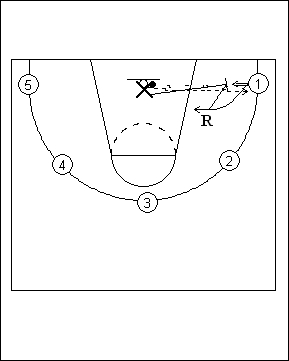

Catégorie : REBOND (Reb-09)
Déroulement
- Le premier défenseur possède un ballon et se trouve sous un anneau. Plusieurs joueurs sont disposés sur la ligne des trois points.
- X1 fait rouler son ballon sur le sol en direction du joueur 1 et effectue le close out sur ce joueur (sortie rapide sur ce joueur). Celui-ci prend un shoot rapide et les deux joueurs disputent le rebond. Si le shooteur gagne le rebond, il reprend sa place, tandis que X1 recommence le même travail avec le joueur 2. Si c’est X1 qui remporte la bataille du rebond, c’est lui qui prend la place du shooteur 1 et ce dernier devient défenseur en faisant rouler le ballon vers le joueur 2; et ainsi de suite.
- Donc, chaque fois qu’un défenseur gagne le rebond, il remplace le shooteur, tandis que celui-ci devient défenseur sur le shoot du joueur suivant.
Coaching points
- Par la suite, on peut permettre à l’attaquant de faire une feinte de shoot et un dribble avant son shoot.
- On peut aussi travailler avec un nombre pair de joueurs sur la ligne des trois points et demander chaque fois au joueur opposé au shoot de jouer le rebond offensif, avec technique de la défense à l’opposé cette fois.